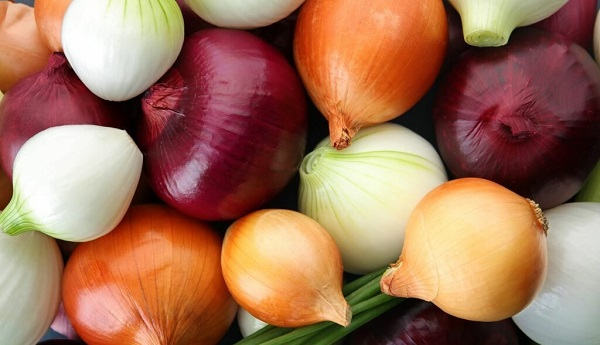

Cebolla / Que variedad utiliza en la Resetas
Kiko Palomare
Adipisicing labore tempor magna ad laborum.
Leer mas
Resetas saludables para programadores
Adipisicing labore tempor magna ad laborum.
Leer masAdipisicing labore tempor magna ad laborum.
Leer mas